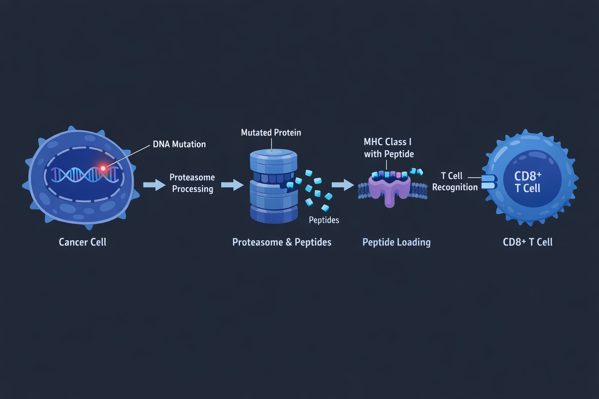
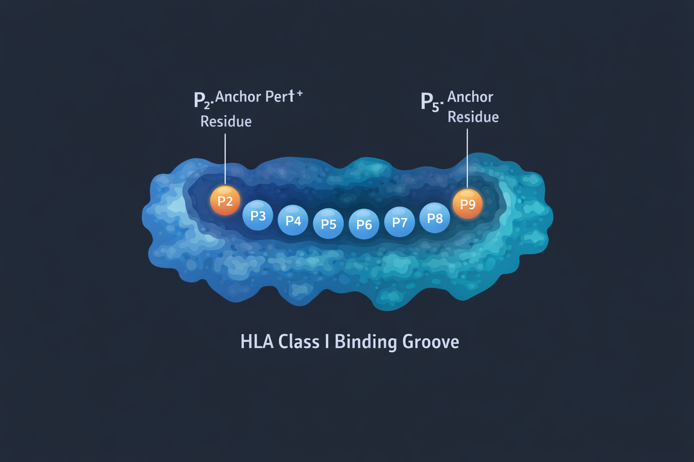
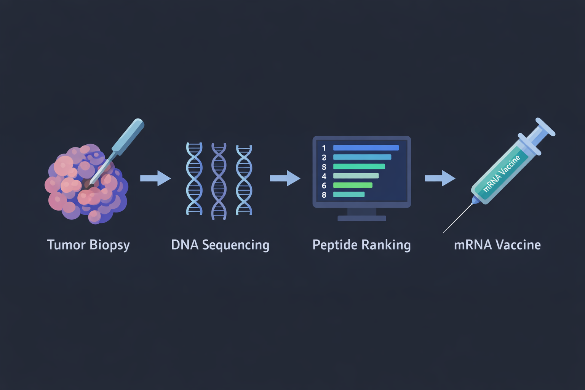
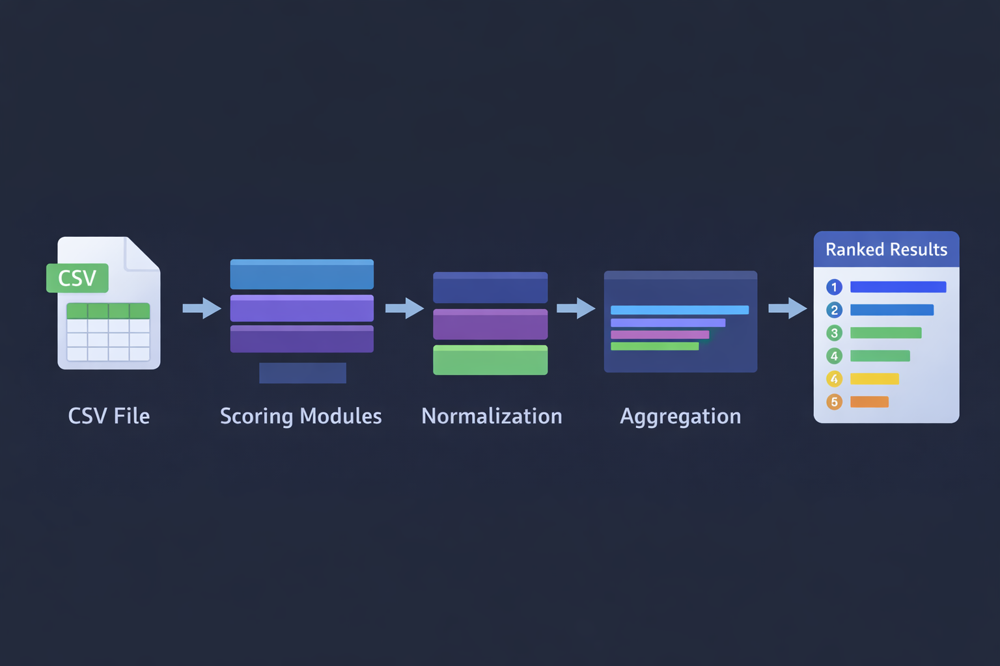
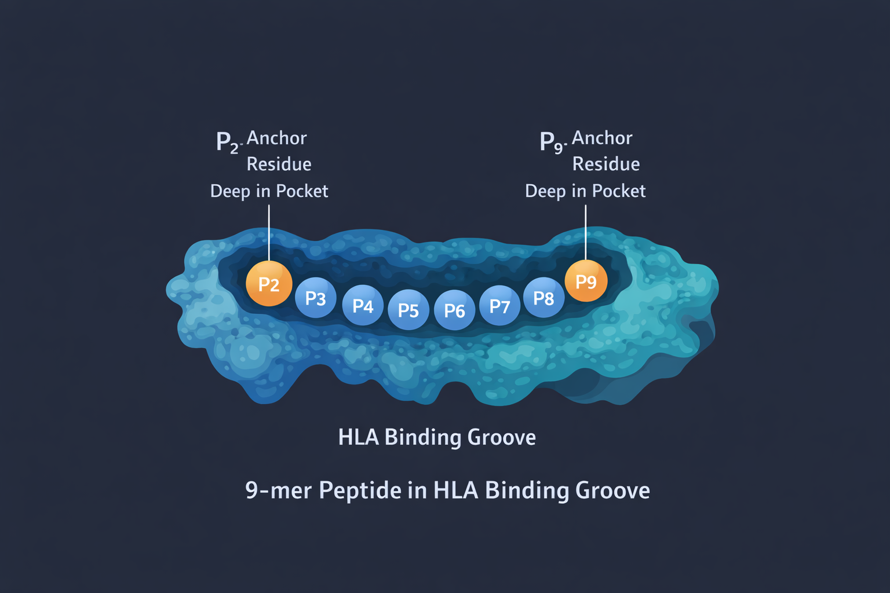

Bioinformatique L3 — Projet
Conception rationnelle de vaccins anti-cancer
par scoring modulaire et explicable
Séance 1 — Onboarding & Git
Chaque groupe a :
groupe-XXDu cancer au vaccin personnalisé
Dans ce projet, on s'intéresse aux lymphocytes T CD8+ (immunité adaptative) — les "tueurs" qui éliminent les cellules anormales.


Sillon HLA-I avec positions d'ancrage P2 et P9
Un bon candidat doit satisfaire plusieurs critères simultanés :

Objectifs, périmètre et livrables
Construire un framework Python modulaire pour prioriser des néo-épitopes HLA classe I à partir de mutations tumorales.
| Critère | Poids |
|---|---|
| Code | 40% |
| Science / Rapport | 20% |
| Recherche / Analyse | 10% |
| Intégration pipeline | 10% |
| Collaboration (Git) | 20% |
| # | Séance | Objectif |
|---|---|---|
| 1 | Onboarding & Git | Setup, comprendre le projet, première PR |
| 2 | Score naïf | Première version de get_score |
| 3 | Données externes | Charger PSSM, corpus, tables de lookup |
| 4 | Robustesse & intégration | Cas limites, tests, assemblage pipeline |
| 5 | Présentations | Oral + analyse critique |
Comment le code s'organise

Le moteur est fourni. Vous n'implémentez que le bloc Modules.
open-neovax/ ├── app.py # Interface Streamlit ├── logic/ │ ├── types.py # Dataclass Candidate │ ├── data_loader.py # Chargement CSV │ ├── orchestrator.py # Découverte modules │ └── scoring.py # Normalisation ├── modules/ │ ├── template_module.py │ └── groupe_XX.py # VOTRE fichier ├── data/ # Données de test └── tests/ └── test_groupe_XX.py # VOS tests
logic/ — le moteurapp.py — l'interfacemodules/groupe_XX.pytests/test_groupe_XX.pyChaque module expose une seule fonction publique :
def get_score(candidate: Candidate) -> tuple[str, float]:
"""
Parameters: candidate — un objet Candidate (peptide_wt, peptide_mut, ...)
Returns: ("nom_du_score", valeur_numérique)
"""
# ... votre logique ici ...
return ("hydrophobicity", 0.72)
candidate_id — identifiantpeptide_wt — séquence wild-typepeptide_mut — séquence mutantemut_pos_1based — position de la mutation18 candidats peptidiques conçus pour tester chaque module :
| Type | Candidats | Rôle |
|---|---|---|
| GOLD | CAND_01, CAND_02 | Excellents candidats — doivent être en haut du classement |
| BON | CAND_03-05, CAND_10 | Bonnes propriétés, quelques faiblesses |
| MEDIOCRE | CAND_07-09, CAND_17 | Ancres faibles, profil moyen |
| PIEGE | CAND_06, CAND_18 | Semblent OK mais ont un défaut caché |
| MAUVAIS | CAND_11-12, CAND_14-16 | Invalides, extrêmes, ou identiques au soi |
Un bon pipeline classe les GOLD en haut, les MAUVAIS en bas, et détecte les PIEGES.
4 axes de scoring, 15 modules
Le peptide a-t-il des propriétés raisonnables ?
Hydrophobicité, charge, complexité, delta WT/MUT
Le peptide peut-il arriver jusqu'au HLA ?
Protéasome, TAP, ERAP, sanity checks
Le peptide se fixe-t-il bien dans le sillon HLA ?
Ancres P2/P9, ancres secondaires, delta binding
Le peptide est-il vraiment "non-soi" ?
Self-similarity, mutation dans la fenêtre
Aucun module seul ne suffit — c'est la combinaison qui fait un bon pipeline.
Le peptide a-t-il un profil physico-chimique compatible avec une présentation immune ?
| Module | Description | Idée |
|---|---|---|
| A1 | Hydrophobicité (Kyte-Doolittle) | Pénaliser les extrêmes : trop hydrophobe = pas soluble, trop hydrophile = pas de liaison HLA |
| A2 | Charge nette / pI | Les peptides très chargés sont mal présentés |
| A3 | Complexité / entropie | Un peptide répétitif (AAAAA) est suspect |
| A4 | Delta WT vs MUT | Si la mutation ne change rien physico-chimiquement → mauvais signe |
Le peptide peut-il survivre au trajet intracellulaire jusqu'au HLA ?
| Module | Description | Idée |
|---|---|---|
| B1 | Protéasome (C-terminal) | Le protéasome coupe préférentiellement après certains AA |
| B2 | TAP (transport) | Le transporteur TAP favorise certains peptides |
| B3 | ERAP (N-terminal) | ERAP peut raccourcir le peptide — certains N-ter résistent mieux |
| B4 | Sanity checks | Vérifications de base : longueur, caractères valides, cohérence |
Le peptide se fixe-t-il bien dans le sillon de liaison HLA ? C'est le coeur du projet.
| Module | Description | Idée |
|---|---|---|
| C1 | Ancre P2 (PSSM) | Position 2 : L ou M sont idéaux pour HLA-A*02:01 |
| C2 | Ancre P9 / PΩ | Dernière position : V ou L sont idéaux |
| C3 | Ancres secondaires | Les autres positions contribuent aussi (mais moins) |
| C4 | Delta binding WT/MUT | La mutation améliore-t-elle la liaison HLA ? |
hla_pssm_A0201.csv) — scores log-odds par acide aminé et par position.

Le peptide est-il vraiment différent des peptides humains normaux ?
| Module | Description | Idée |
|---|---|---|
| D1 | Self-similarity exacte | Le peptide mutant existe-t-il dans le protéome humain ? |
| D2 | Self-similarity approx. | Distance de Hamming avec le corpus humain |
| D3 | Mutation dans la fenêtre | La mutation est-elle vraiment dans le peptide analysé ? |
Chaque module seul a des angles morts :
| Candidat | Score HLA | Problème réel |
|---|---|---|
| CAND_11 | Bon | Hydrophobicité extrême |
| CAND_14 | Bon | Identique au soi |
| CAND_06 | Correct | WT == MUT (piège !) |
| CAND_01 | Excellent | OK partout ! |
Un seul score
ne suffit jamais.
C'est toute la raison d'être du pipeline modulaire.
Travailler comme des pros
git clone — Récupérer le projetgit checkout -b groupe-XX — Créer votre branchegit add + git commit -m "feat: ..." — Sauvegardergit push -u origin groupe-XX — Envoyer sur GitHubÀ chaque push sur votre PR, GitHub lance automatiquement 3 vérifications :
Qualité du code
Erreurs PEP8
Imports inutiles
Formatage uniforme
Indentation, espaces
Style cohérent
Tests unitaires
Votre code fonctionne
Rien n'est cassé
Les 3 doivent passer pour que votre PR puisse être mergée.
Toujours passer par une branche + Pull Request
Vous ne touchez qu'à VOS fichiers
logic/ et app.py sont fournis et intouchables
C'est à vous de jouer
# 1. Cloner le dépôt git clone https://github.com/open-neovax-course/open-neovax.git cd open-neovax # 2. Créer l'environnement virtuel python3 -m venv .venv source .venv/bin/activate # Linux / macOS # .venv\Scripts\activate # Windows # 3. Installer les dépendances pip install -r requirements.txt # 4. Vérifier que tout marche pytest tests/ -v # → 22 passed ruff check . # → All checks passed black --check . # → All done # 5. Lancer l'interface streamlit run app.py
Avant de partir, chaque groupe doit avoir coché toutes ces cases :
pytest → 22 passedstreamlit run app.py fonctionnegroupe-XX crééegroupe_XX.py
Prochaine séance : vous implémenterez votre première version de get_score
Documentation : docs/ dans le repo
Guide Git : CONTRIBUTING.md